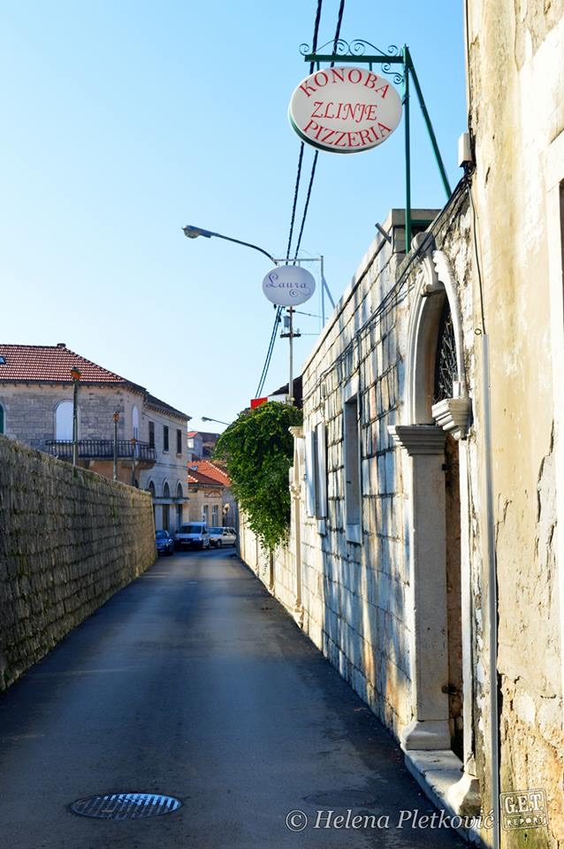
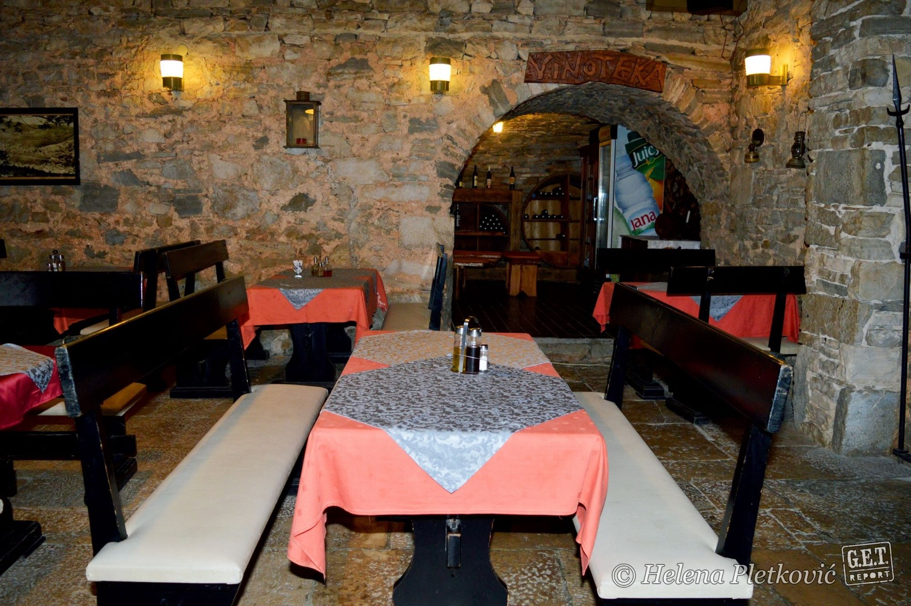
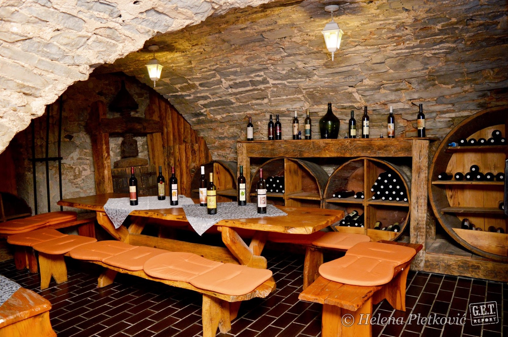
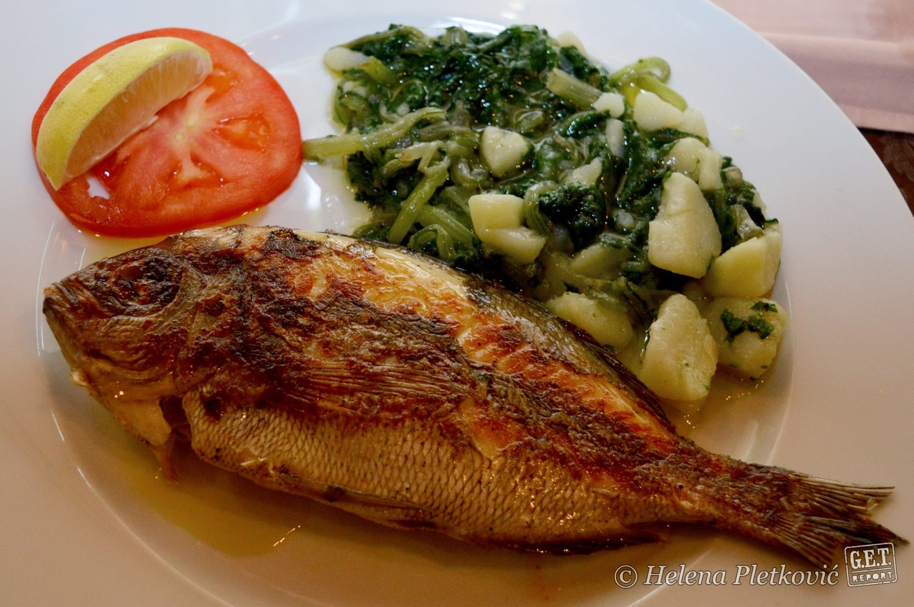

Specijalitet kuće
Dalmatinska peka
Meso i povrće polagano pečeni ispod zvonolikog poklopca zatrpanog vrućim pepelom.
Konoba Zlinje je obiteljski restoran specijaliziran za tradicionalna dalmatinska jela. Prije stotinjak godina ovdje je bio vinski podrum, a danas za vas kuhamo od svježih namirnica lokalnih poljoprivrednika i ribara.



Prije stotinjak godina naš je restoran bio vinski podrum. Zato se i danas zove konoba. Dođite i doživite šarm prošlih vremena.
Mi smo obiteljski restoran i kuhamo tradicionalna dalmatinska jela. Uvijek ih pripremamo od svježih namirnica koje nam donose lokalni poljoprivrednici i ribari. Otvoreni smo svaki dan, za ručak i za večeru.
Svaki dan pripremamo i dnevnu ponudu. Što je danas na stolu, provjerite telefonom ili nas pitajte pri dolasku.
Meso i povrće polagano pečeni ispod zvonolikog poklopca zatrpanog vrućim pepelom.

S kaparima, sitno sjeckanim lukom i rajčicom.
Pirjana govedina, polagano kuhana u posebnom umaku i poslužena s njokima.
Nudimo catering i organiziramo posebne prigode, od vjenčanja do krštenja. Jelovnik složimo prema vašim željama. Nazovite nas i dogovorit ćemo detalje.
Kamen, drvo i miris s kuhinje. Ovako izgleda Zlinje iznutra i izvana.

Fotografije: Helena Pletković (G.E.T.), objavljene na dosadašnjoj stranici konobe.
Ispunite obrazac i otvorit će vam se pripremljen e-mail koji samo pošaljete. Za brzi dogovor najbolje je nazvati.
| Svaki dan | ručak i večera |
| Zimi | 10–15 i 17–24 h |
| Od 1. svibnja | otvoreno cijeli dan |
Za proslave i jelovnik po želji nazovite nas.